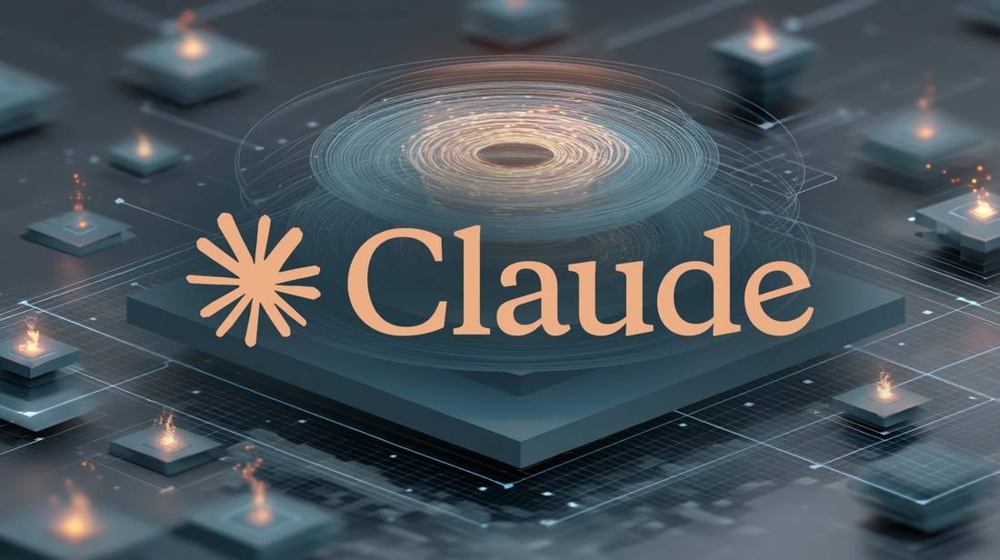
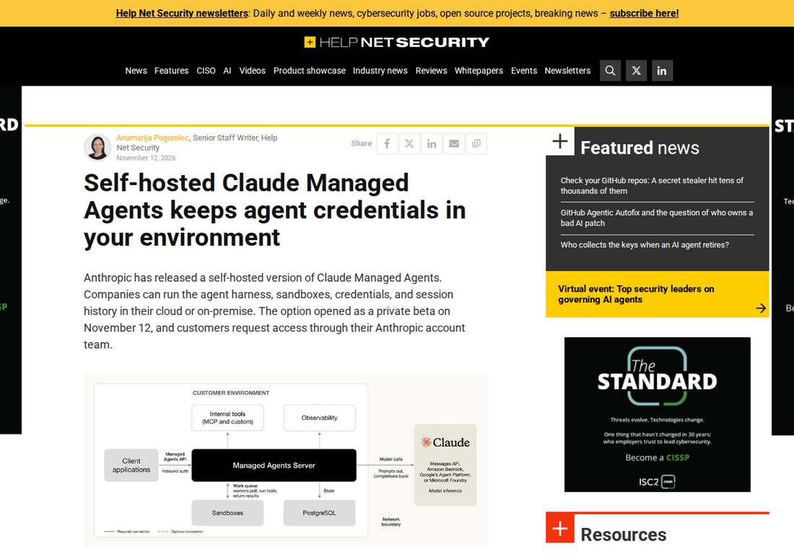

Anthropic Opens Self-Hosted Claude Managed Agents in Private Beta; the Model Still Runs Outside
On November 12, 2026, Anthropic opened a private beta of self-hosted Claude Managed Agents: companies can run the whole agent service, harness, sandboxes, credentials and session history, on their own cloud or on-premises infrastructure. The model itself does not move: each call goes to a provider the customer picks, Anthropic by default, or Amazon Bedrock, Google, Microsoft Foundry, or the customer's own gateway. Access is through the Anthropic account team; no pricing or general-availability date has been published. Scheduled deployments, dreams and webhooks are unavailable on the self-hosted server.

- 01THE ANNOUNCEMENT — On November 12, 2026, Anthropic announced self-hosted Claude Managed Agents in private beta, via its ClaudeDevs account and platform release notes. Companies can run the whole Managed Agents service on their own infrastructure, and store agents, sessions and session history there. Access is through the Anthropic account team.
- 02WHAT MOVES HOME — The customer operates the cma-server, a PostgreSQL 16 or later database, and the workers that run shell and file tools inside sandboxes. Model calls go to Anthropic by default, or Amazon Bedrock, Google, Microsoft Foundry, or the customer's own gateway. The hosted service launched April 8, 2026; self-hosted sandboxes followed May 19, 2026.
- 03THE WATCHPOINT — Watch for pricing and a general-availability date, neither published, and for whether scheduled deployments, dreams and webhooks arrive on the self-hosted server. Watch whether rivals follow Mistral's November 6 VPC move and Anthropic's self-hosting into the same enterprise perimeter pitch.
WHAT HAPPENEDWhat Happened
On November 12, 2026, Anthropic opened a private beta of self-hosted Claude Managed Agents, letting companies run the entire agent service on their own cloud or on-premises infrastructure. The agent harness, sandboxes, credentials and session history all live on the customer's side of the perimeter. Access is through the customer's Anthropic account team, and Anthropic has published no pricing, no list of covered countries and no schedule for leaving beta.
The customer operates three things: the Managed Agents server (cma-server), which serves the API, runs the agent loop and stores agents, sessions and their histories; a PostgreSQL 16 or later database for that history; and the workers that run shell and file tools inside the customer's sandboxes. The server never runs an agent's shell or file tools, and Anthropic says it has no remote access to the self-hosted server or its logs. The one thing that does not move home is the model itself: each model call goes to a provider the customer picks, Anthropic by default, or Amazon Bedrock, Google, Microsoft Foundry, or the customer's own model gateway.
Claude Managed Agents began as a fully hosted service on April 8, 2026, with Anthropic running the infrastructure. On May 19, 2026, Anthropic added self-hosted sandboxes, moving an agent's tool execution onto customer systems while Anthropic kept running the agent itself. The November 12 announcement brings the rest in-house. The private beta is not a feature-for-feature copy of the hosted service: scheduled deployments, dreams and webhooks are unavailable on the self-hosted server, and web search and web fetch stay off until explicitly enabled.
WHY IT MATTERSSelf-hosted, but the model still phones home
The distinction is the whole story. The harness, the credentials and the session history now sit inside the customer's perimeter, which matters for agents that work unattended inside corporate systems, fixing broken builds, testing releases, triaging alerts and working through bug backlogs. But Claude itself still runs outside the customer's network, so prompts go out and completions come back. Self-hosting the service does not by itself keep model traffic inside the customer's network.
The security design carries over from the hosted service. Anthropic built Managed Agents around four principles: the harness that calls Claude is separated from the sandbox where the agent's code runs, the agent loop, session history and vault secrets sit outside the sandbox, credentials are attached to requests by a proxy outside the sandbox for MCP tools and supported API calls, and each environment can be locked to a list of allowed hosts. Self-hosted customers can keep credentials in their own secrets manager, and the step-by-step log of every tool call exports over OpenTelemetry.
WHAT TO WATCHThe VPC race, and what is missing
The move comes six days after Mistral took its Studio, with managed agents and apps, into the customer's virtual private cloud on November 6. The direction of travel is the same: more autonomy, but with guardrails enterprises can actually operate. Watch whether Anthropic publishes pricing and a general-availability date, and whether the missing hosted features, scheduled deployments, dreams and webhooks, arrive on the self-hosted server.
Teams planning a move should read the gaps first. Nothing migrates from the hosted service: agents, skills, vault credentials, memory stores and session history all have to be rebuilt, and the Docker Compose setup in the documentation is for development only, with separate Helm-based deployment tooling recommended for a persistent install. The server, the database and the firewall rules are now the customer's to run, and so is keeping them patched.
SIGNAL JUDGMENT — ANALYSISThe agent moves in-house; the model stays out
Tokenta Signal's judgment: Anthropic is answering the enterprise objection that kept long-running agents out of regulated shops: the harness, the credentials and the history now live behind the customer's firewall. But the model still runs outside, so this is control over the agent, not sovereignty over the intelligence. The private beta is narrow, the gaps are real, and the pricing is unstated. The test is whether the hosted features follow.
WHAT REMAINS UNCERTAINWhat Remains Uncertain
EVIDENCEEvidence

Anthropic opened a private beta on November 12, 2026 that lets companies run the entire Claude Managed Agents service on their own cloud or on-premises infrastructure. The agent harness, sandboxes, credentials and session history all live on the customer's side, while model calls go to a provider the customer picks: Anthropic by default, or Amazon Bedrock, Google, Microsoft Foundry, or the customer's own gateway. Access is through the Anthropic account team; Anthropic has published no pricing or general-availability date.
PRIMARY SOURCESPrimary Sources
- Help Net Security: Self-hosted Claude Managed Agents keeps agent credentials in your environment
https://www.helpnetsecurity.com/2026/11/12/anthropic-self-hosted-claude-managed-agents/ - AI Frontier Post: Anthropic lets enterprises self-host the full Claude Managed Agents stack, private beta now open
https://aifrontierpost.com/articles/anthropic-self-hosted-claude-managed-agents-private-beta/ - Pasquale Pillitteri: Anthropic launches self-hosted Claude Managed Agents in private beta
https://pasqualepillitteri.it/en/news/32740/self-hosted-claude-managed-agents-private-beta
RELATEDRelated Intelligence
- Microsoft 365 Outage Fully Closed as Business and Exchange Incidents Marked Service Restored
- Microsoft 365 Consumer Incident Remediated as Email Backlog Clears; Business Outage Still Open
- FAA Lifts Nationwide Ground Stop After Four Hours; Officials Blame Aging Equipment, Rule Out Cyberattack
- FAA Grounds All U.S. Departures in First Nationwide Stop Since 2023; New AI Routing Tool Faces Scrutiny